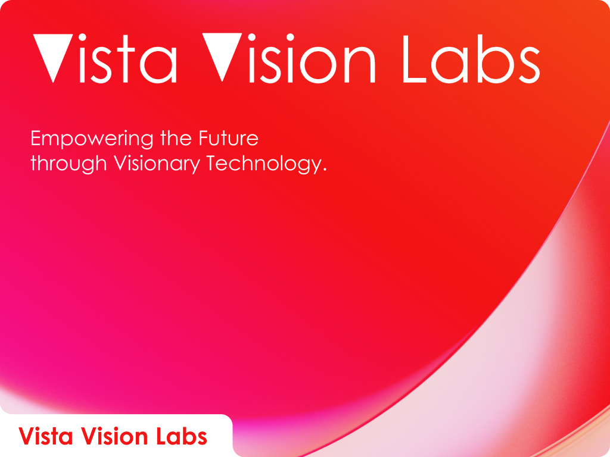
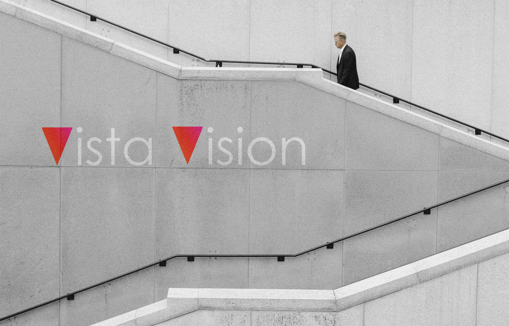
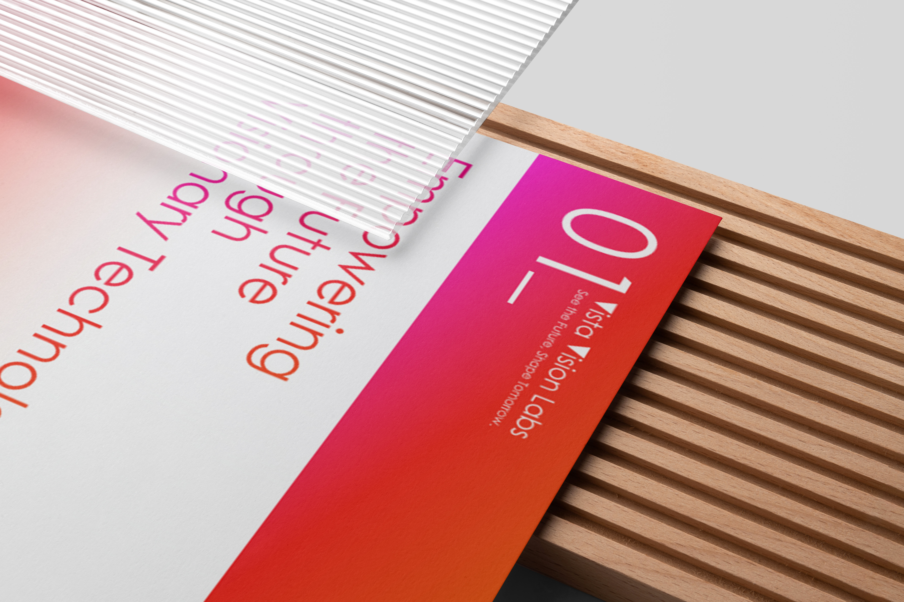
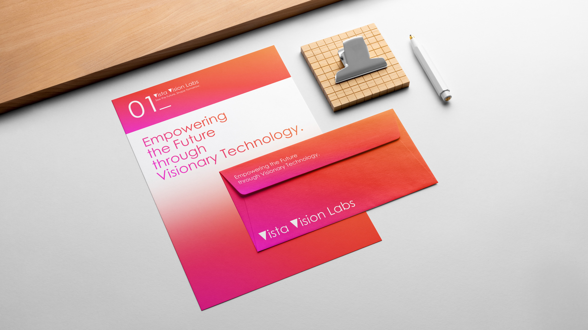

Vista Vision

"A Journey into the Depths of Faith"
"VistaVision Labs is committed to advancing the forefront of artificial intelligence visual technology. We bring together a team of scientists, engineers, and innovators dedicated to developing cutting-edge visual intelligence solutions to tackle the complex challenges of today's world. Through advanced computer vision technology, our aim is to achieve comprehensive understanding and application of visual data to create greater value for businesses, organizations, and society. Continuously pushing the boundaries of technology, our team is dedicated to translating the latest research advancements into practical commercial applications, helping clients innovate, enhance efficiency, and gain competitive advantages."
"Our core values lie in innovation, quality, and reliability. Whether in autonomous driving, intelligent surveillance, medical imaging, industrial inspection, or smart cities, VistaVision Labs' solutions offer unprecedented opportunities and transformations for your business."
"VistaVision Labs is committed to advancing the forefront of artificial intelligence visual technology. We bring together a team of scientists, engineers, and innovators dedicated to developing cutting-edge visual intelligence solutions to tackle the complex challenges of today's world. Through advanced computer vision technology, our aim is to achieve comprehensive understanding and application of visual data to create greater value for businesses, organizations, and society. Continuously pushing the boundaries of technology, our team is dedicated to translating the latest research advancements into practical commercial applications, helping clients innovate, enhance efficiency, and gain competitive advantages."
"Our core values lie in innovation, quality, and reliability. Whether in autonomous driving, intelligent surveillance, medical imaging, industrial inspection, or smart cities, VistaVision Labs' solutions offer unprecedented opportunities and transformations for your business."

Where design meets technology, sculpting tomorrow's visual landscape with innovative solutions that redefine perception and inspire creativity.


Explore the intersection of design and technology with VistaVision Labs,
where we pioneer visionary solutions to reshape the future of visual
experience.


Brand Name:
Category:
Designer:
"Vista Vision"
"VI Design"
"Su Ziyue"
Feel free to explore my work and get in touch if you'd like to collaborate or discuss potential design opportunities. Let's bring your digital ideas to life together!